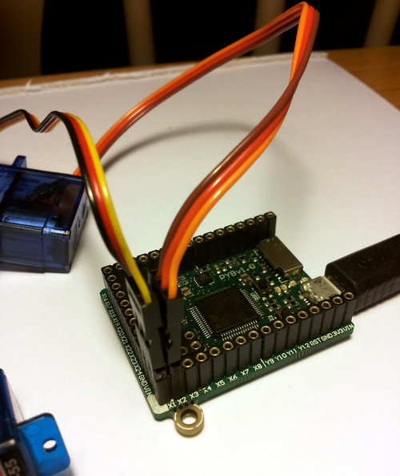

1. Controlling hobby servo motors¶
There are 4 dedicated connection points on the pyboard for connecting up hobby servo motors (see eg Wikipedia). These motors have 3 wires: ground, power and signal. On the pyboard you can connect them in the bottom right corner, with the signal pin on the far right. Pins X1, X2, X3 and X4 are the 4 dedicated servo signal pins.
In this picture there are male-male double adaptors to connect the servos to the header pins on the pyboard.
The ground wire on a servo is usually the darkest coloured one, either black or dark brown. The power wire will most likely be red.
The power pin for the servos (labelled VIN) is connected directly to the input power source of the pyboard. When powered via USB, VIN is powered through a diode by the 5V USB power line. Connect to USB, the pyboard can power at least 4 small to medium sized servo motors.
If using a battery to power the pyboard and run servo motors, make sure it is not greater than 6V, since this is the maximum voltage most servo motors can take. (Some motors take only up to 4.8V, so check what type you are using.)
1.1. Creating a Servo object¶
Plug in a servo to position 1 (the one with pin X1) and create a servo object using:
>>> servo1 = pyb.Servo(1)
To change the angle of the servo use the angle method:
>>> servo1.angle(45)
>>> servo1.angle(-60)
The angle here is measured in degrees, and ranges from about -90 to +90,
depending on the motor. Calling angle without parameters will return
the current angle:
>>> servo1.angle()
-60
Note that for some angles, the returned angle is not exactly the same as the angle you set, due to rounding errors in setting the pulse width.
You can pass a second parameter to the angle method, which specifies how
long to take (in milliseconds) to reach the desired angle. For example, to
take 1 second (1000 milliseconds) to go from the current position to 50 degrees,
use
>>> servo1.angle(50, 1000)
This command will return straight away and the servo will continue to move
to the desired angle, and stop when it gets there. You can use this feature
as a speed control, or to synchronise 2 or more servo motors. If we have
another servo motor (servo2 = pyb.Servo(2)) then we can do
>>> servo1.angle(-45, 2000); servo2.angle(60, 2000)
This will move the servos together, making them both take 2 seconds to reach their final angles.
Note: the semicolon between the 2 expressions above is used so that they are executed one after the other when you press enter at the REPL prompt. In a script you don’t need to do this, you can just write them one line after the other.
1.2. Continuous rotation servos¶
So far we have been using standard servos that move to a specific angle and stay at that angle. These servo motors are useful to create joints of a robot, or things like pan-tilt mechanisms. Internally, the motor has a variable resistor (potentiometer) which measures the current angle and applies power to the motor proportional to how far it is from the desired angle. The desired angle is set by the width of a high-pulse on the servo signal wire. A pulse width of 1500 microsecond corresponds to the centre position (0 degrees). The pulses are sent at 50 Hz, ie 50 pulses per second.
You can also get continuous rotation servo motors which turn continuously clockwise or counterclockwise. The direction and speed of rotation is set by the pulse width on the signal wire. A pulse width of 1500 microseconds corresponds to a stopped motor. A pulse width smaller or larger than this means rotate one way or the other, at a given speed.
On the pyboard, the servo object for a continuous rotation motor is
the same as before. In fact, using angle you can set the speed. But
to make it easier to understand what is intended, there is another method
called speed which sets the speed:
>>> servo1.speed(30)
speed has the same functionality as angle: you can get the speed,
set it, and set it with a time to reach the final speed.
>>> servo1.speed()
30
>>> servo1.speed(-20)
>>> servo1.speed(0, 2000)
The final command above will set the motor to stop, but take 2 seconds to do it. This is essentially a control over the acceleration of the continuous servo.
A servo speed of 100 (or -100) is considered maximum speed, but actually you can go a bit faster than that, depending on the particular motor.
The only difference between the angle and speed methods (apart from
the name) is the way the input numbers (angle or speed) are converted to
a pulse width.
1.3. Calibration¶
The conversion from angle or speed to pulse width is done by the servo object using its calibration values. To get the current calibration, use
>>> servo1.calibration()
(640, 2420, 1500, 2470, 2200)
There are 5 numbers here, which have meaning:
Minimum pulse width; the smallest pulse width that the servo accepts.
Maximum pulse width; the largest pulse width that the servo accepts.
Centre pulse width; the pulse width that puts the servo at 0 degrees or 0 speed.
The pulse width corresponding to 90 degrees. This sets the conversion in the method
angleof angle to pulse width.The pulse width corresponding to a speed of 100. This sets the conversion in the method
speedof speed to pulse width.
You can recalibrate the servo (change its default values) by using:
>>> servo1.calibration(700, 2400, 1510, 2500, 2000)
Of course, you would change the above values to suit your particular servo motor.